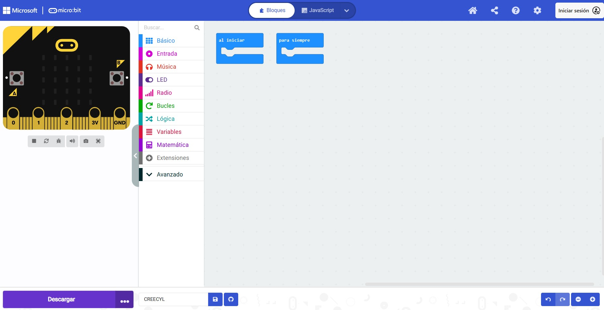

Ya conocemos la placa y los componentes externos que vamos a utilizar, es hora de darle órdenes a nuestra placa o programarla.
Vamos a utilizar la programación por bloques en el entorno de MakeCode. Podéis utilizarla sin registro, pero si queréis guardar los proyectos en vuestra cuenta, podéis utilizar vuestra cuenta de @educacyl, ya que tenéis acceso seguro y gratuito a este entorno de programación.
Para acceder a la página web, podéis clicar en el siguiente enlace: acceso a MakeCode.

Si habéis trabajado antes programación por bloques, veréis que la interfaz o estructura de la página es algo parecida a otras páginas como Scratch o Code.org.
Con las indicaciones iniciales que te de tu profesora sobre el uso de MakeCode será suficiente, pero si quieres seguir aprendiendo puedes acceder a un tutorial en el siguiente enlace.
También puedes acceder a proyectos y su código en la siguiente página de Micro:Bit: acceso a MakeIt:CodeIt
En el caso de programación de los servos necesitarás además una extensión para los bloques específicos. Sigue las indicaciones de tu profesora.